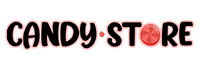

    <mat-toolbar> 
        <mat-toolbar-row>
            <span>
                
            </span>
            <span class="example-spacer"></span>
            <button class="color" mat-raised-button [routerLink]="'/inicio'">Inicio</button>
            <button class="color" mat-raised-button [routerLink]="'/login'">Login</button>
    
            
        </mat-toolbar-row>
    
    </mat-toolbar>

